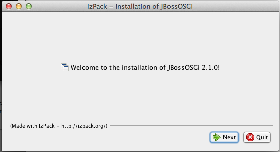
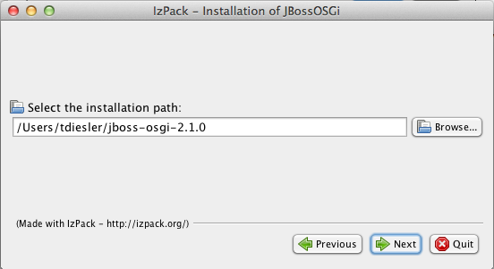

java -jar jboss-osgi-installer-2.1.0.jar
Content
This chapter takes you through the first steps of getting JBoss OSGi and provides the initial pointers to get up and running.
Download the Distribution
JBoss OSGi is shipped as part of WildFly, which can be downloaded from the WildFly download area.
The JBoss OSGi Project Distribution
While WildFly has OSGi support built-in, the JBoss OSGi project also provides an installer which contains examples and documentation and can in some cases provide more recent releases of the OSGi project than can be found in WildFly.
JBoss OSGi is distributed as an IzPack installer archive. The installer is available from the JBoss OSGi download area.
Running the Installer
To run the Project Distribution installer execute the following command:
The installer first shows a welcome screen

Then you select the installation path for the JBoss OSGi distribution. This is the directory where you find binaries, sources, examples and documentation.

You can then select whether you want to install the OSGi subsystem into an existing WildFly build

Activating the Subsystem
By default the OSGi subsystem is activated lazily. It means that the framework will not start up unless you deploy an OSGi bundle. You can activate the OSGi subsystem explicitly by setting the activation property to 'eager'
<subsystem xmlns="urn:jboss:domain:osgi:1.2" activation="eager">
It is also not part of the default configuration. Instead you can use the provided standalone-osgi.xml configuration.
When you start up WildFly you should see something like this
[tdiesler@localhost wildfly-8.0.0.Alpha3]$ bin/standalone.sh -c standalone-osgi.xml ========================================================================= JBoss Bootstrap Environment JBOSS_HOME: /Users/tdiesler/git/wildfly-8.0.0.Alpha3/build/target/wildfly-8.0.0.Alpha3 JAVA: /Library/Java/JavaVirtualMachines/jdk1.7.0_25.jdk/Contents/Home/bin/java JAVA_OPTS: ... ========================================================================= 12:56:31,829 INFO [org.jboss.modules] (main) JBoss Modules version 1.2.4.Final 12:56:32,081 INFO [org.jboss.msc] (main) JBoss MSC version 1.2.0.Beta1 12:56:32,160 INFO [org.jboss.as] JBAS015899: WildFly 8.0.0.Alpha3 "WildFly" starting ... 12:56:34,741 INFO [org.jboss.osgi.framework] JBOSGI011006: OSGi Framework - 3.0.2.Final 12:56:34,991 INFO [org.jboss.osgi.framework] JBOSGI011001: Bundle installed: org.apache.felix.log:1.0.1 12:56:34,994 INFO [org.jboss.osgi.framework] JBOSGI011001: Bundle installed: jboss-osgi-logging:1.0.0 12:56:34,998 INFO [org.jboss.osgi.framework] JBOSGI011001: Bundle installed: org.apache.felix.configadmin:1.6.0 ... 12:56:35,303 INFO [org.jboss.osgi.framework] JBOSGI011011: Starting bundles for start level: 1 12:56:35,328 INFO [org.jboss.osgi.framework] JBOSGI011002: Bundle started: org.apache.felix.log:1.0.0 12:56:35,342 INFO [org.jboss.osgi.framework] JBOSGI011002: Bundle started: jboss-osgi-logging:1.0.0 12:56:35,377 INFO [org.jboss.osgi.framework] JBOSGI011002: Bundle started: org.apache.felix.configadmin:1.2.8 ... 12:56:35,709 INFO [org.jboss.osgi.framework] JBOSGI011000: OSGi Framework started 12:56:35,769 INFO [org.jboss.as] JBAS015874: WildFly 8.0.0.Alpha2 "WildFly" started in 4379ms 12:46:39,491 INFO [org.jboss.modules] (main) JBoss Modules version 1.2.4.Final 12:46:39,714 INFO [org.jboss.msc] (main) JBoss MSC version 1.2.0.Beta2 ... 12:46:41,417 INFO [org.jboss.osgi.framework] (MSC service thread 1-1) JBOSGI011006: OSGi Framework - 3.0.2.Final 12:46:42,153 INFO [org.jboss.osgi.framework] (MSC service thread 1-3) JBOSGI011001: Bundle installed: org.apache.felix.log:1.0.1 12:46:42,157 INFO [org.jboss.osgi.framework] (MSC service thread 1-3) JBOSGI011001: Bundle installed: jboss-osgi-logging:1.0.0 12:46:42,161 INFO [org.jboss.osgi.framework] (MSC service thread 1-3) JBOSGI011001: Bundle installed: org.apache.felix.configadmin:1.6.0 12:46:42,164 INFO [org.jboss.osgi.framework] (MSC service thread 1-3) JBOSGI011001: Bundle installed: jbosgi-wildfly-configadmin:2.1.0 ... 12:46:42,255 INFO [org.jboss.osgi.framework] (MSC service thread 1-6) JBOSGI011011: Starting bundles for start level: 1 12:46:42,258 INFO [org.jboss.osgi.framework] (MSC service thread 1-6) JBOSGI011002: Bundle started: jbosgi-wildfly-http:2.1.0 12:46:42,258 INFO [org.jboss.osgi.framework] (MSC service thread 1-6) JBOSGI011002: Bundle started: jbosgi-wildfly-jpa:2.1.0 12:46:42,270 INFO [org.jboss.osgi.framework] (MSC service thread 1-6) JBOSGI011002: Bundle started: org.apache.felix.log:1.0.1 12:46:42,283 INFO [org.jboss.osgi.framework] (MSC service thread 1-6) JBOSGI011002: Bundle started: jboss-osgi-logging:1.0.0 12:46:42,308 INFO [org.jboss.osgi.framework] (MSC service thread 1-6) JBOSGI011002: Bundle started: org.apache.felix.configadmin:1.6.0 12:46:42,319 INFO [org.jboss.osgi.framework] (MSC service thread 1-6) JBOSGI011002: Bundle started: jbosgi-wildfly-configadmin:2.1.0 12:46:42,320 INFO [org.jboss.osgi.framework] (MSC service thread 1-6) JBOSGI011000: OSGi Framework started ... 12:46:42,373 INFO [org.jboss.as] (Controller Boot Thread) JBAS015874: WildFly 8.0.0.Alpha3 "WildFly" started in 3197ms
Provided Examples
The JBoss OSGi project distribution comes with a number of examples that you can build and run in an OSGi standalone environment (i.e. without WildFly integration).
-
blueprint - Basic Blueprint Container examples
-
configadmin - Configuration Admin example
-
core - Simple OSGi examples (start here)
-
ds - Declarative Services examples
-
eventadmin - Event Admin examples
-
jmx - Standard and extended JMX examples
Additional to that there are a number of integration examples that document and verify the WildFly integration
-
cdi - CDI integration examples
-
ear - Bundles in enterprise archives examples
-
ejb3 - EJB3 integration examples
-
http - HttpService examples
-
interceptor - Intercept and process bundle metadata
-
jaxb - XML binding examples
-
jaxp - SAX/DOM parser examples
-
jaxrs - REST integration examples
-
jaxws - WebService integration examples
-
jndi - Naming integration examples
-
jpa - Persistence integration examples
-
jta - Transaction integration examples
-
resource - Resource injection examples
-
webapp - WebApplication (WAR) examples
For more information on these examples, see the Provided Examples section.
Bundle Deployment
Bundle Deployment from the command-line is supported through the CLI console and through the web-based Management Console.
It is also possible to deploy bundles by dropping them in the deployments folder. This will automatically resolve and start the bundle when possible. Bundles can be started explicitly through the CLI or the web console.
When a bundle is installed and started, messages like the following can be seen from the server console.
$ bin/standalone.sh -c standalone-osgi.xml ... 13:53:53,742 INFO [org.jboss.as.server.deployment] JBAS015876: Starting deployment of "org.apache.felix.eventadmin.jar" 13:53:54,196 INFO [org.jboss.osgi.framework] JBOSGI011001: Bundle installed: org.apache.felix.eventadmin:1.3.0 13:53:54,309 INFO [org.jboss.osgi.framework] JBOSGI011002: Bundle started: org.apache.felix.eventadmin:1.3.0 13:53:54,354 INFO [org.jboss.as.server] JBAS018559: Deployed "org.apache.felix.eventadmin.jar"
Managing installed Bundles
WildFly comes with a Web Console. After startup you can point your browser to http://localhost:9990/console.

The Web Console can be used to install, start, stop and uninstall bundles. Additionally, the web console can be used to activate the framework and manage the current framework Start Level.
Felix Web Console
For more detailed management operations you can also install the Felix Web Console
In WildFly 8.x you add this capability
<capability name="org.apache.felix:org.apache.felix.webconsole:3.1.8" startlevel="1"/>
The console is then accessible on: http://localhost:8080/system/console